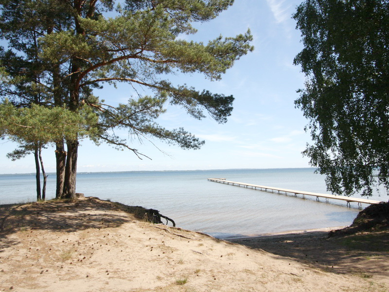

Расположена усадьба в живописнейшем уголке Беларуси, на территории курорта республиканского значения «Нарочь» и Национального парка «Нарочанский». Славится край Нарочанский своей красотой, удивительной природой, радушием и добротой людей. Сосновые леса, мурожные луга, бескрайняя лазурь небес и воды, неповторимые пейзажи. Здесь воздух, чистый и настоянный запахом смолистых хвойных и позолоченных солнечным светом лиственных лесов, вобравший в себя дыхание озерной водной глади, сам по себе уже целебный. Находясь в таком чудном месте, Вы почувствуете, как вливается в Вас с нежным ароматом цветов и трав новая жизненная энергия, возвращаются силы, исчезает усталость и нервное напряжение. ВНИМАНИЕ! Недалеко от усадьбы,(3 км)в санатории Сосны бесплатно действует бювет с минеральной водой. По своему воздействию, вода максимально приближена к водам курортов г. Трускавец.
Нарочанский край – уникальная природная сокровищница и крупнейший курортный регион Беларуси. Живописные
пейзажи, чистые озера и реки, целебные минеральные источники привлекают сюда гостей со всего мира. Нарочанский
край известен своим природным разнообразием и особым ландшафтом, который образовался при отступлении
Валдайского ледника около 15-20 тысяч лет назад. Именно тогда возникли знаменитые нарочанские озера. Водоемы
занимают примерно пятую часть парка и относятся к бассейнам Немана и Западной Двины. Здесь же протекают реки
Страча, Нарочанка, Узлянка, Свирица. В границах национального парка расположено 43 озера, в том числе 4
группы: Нарочанская, Мядельская, Болдукская и Свирская. Жемчужины края – самое большое озеро Беларуси Нарочь
(площадь 79,6 км²), Мястро, Баторино. Около 48% территории парка покрыто сосновыми борами и березовыми рощами.
Флора отличается многообразием мхов, лишайников, грибов, водорослей. Здесь насчитывается более 1400 видов
высших растений, из них 114 занесены в Красную книгу Беларуси, в том числе самая красивая белорусская орхидея
– венерин башмачок. Венерин башмачокФауну представляют 314 видов позвоночных животных.
Здесь говорят на этих языках: белорусский, польский, русский